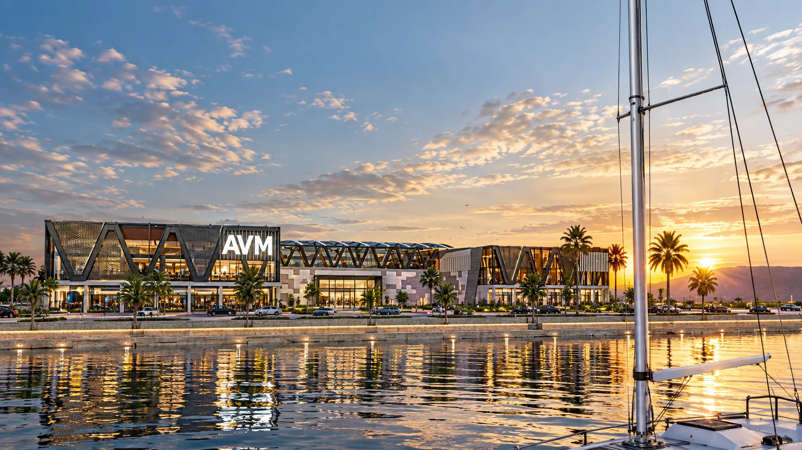

VISUALIZATION · MOTION
Architecture shaped through concept, detail, image and motion.
EXPLORE WORK ↓Architecture first.
Visualization as a strength.
Concept-driven architectural projects lead the sequence, followed by professional practice, visualization and interior work.
Architectural films.
Selected animation work. Previews play automatically; open any film to watch the full version with sound.
Architecture,
made visible.
I am an architect based in Ankara, with academic and professional experience across Türkiye and Italy. My work moves between architectural concept, design development, implementation documentation, BIM and 3D modeling, visualization and on-site construction experience.
I have worked across residential, commercial, industrial, educational and public projects, from early design decisions to technical coordination and visual communication. This combination allows me to approach images and films as part of the architectural process rather than as a separate final layer.
I am especially interested in sustainable and context-driven design, material clarity and creating architectural narratives that remain convincing from drawing to built space — and from still image to motion.